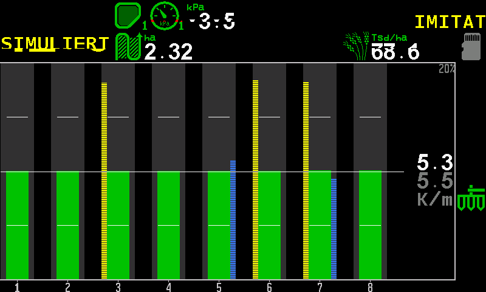
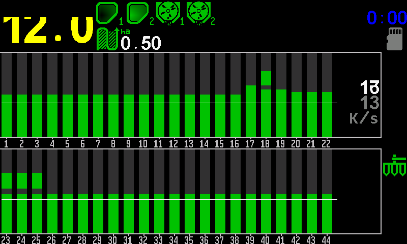
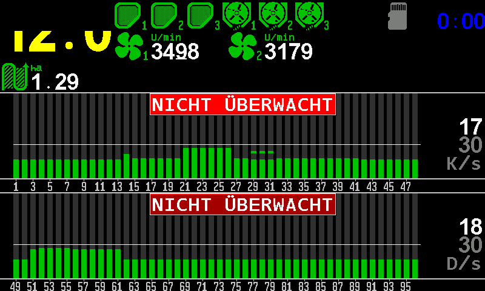
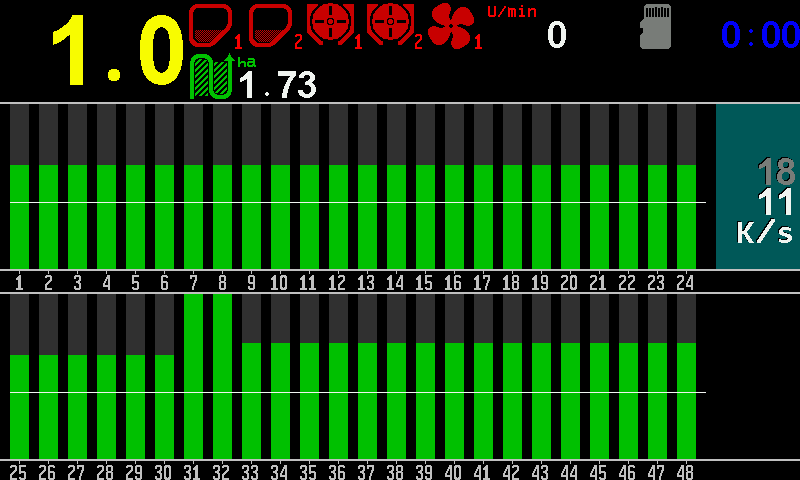

Der Startbildschirm an verschiedenen Maschinen
Dasselbe Panel an einem Einzelkornsägerät, an einer Drillmaschine und an Maschinen mit 44 und 96 Reihen — im Stillstand und bei der Arbeit —, damit Sie Ihren eigenen Bildschirm wiedererkennen.
Was der Startbildschirm zeigt, folgt dem Profil. Die Bilder unten wurden auf einem Panel mit Firmware 1.2.3 aufgenommen, das als verschiedene Maschinen eingerichtet war. Prüfstandsbesonderheiten — die blaue Uhr, die gelbe Geschwindigkeit — sind unter Zu den Bildern in dieser Anleitung erklärt.
Ein Achtreihen-Einzelkornsägerät im Stillstand

- Fahrgeschwindigkeit. Gelb: Die Geschwindigkeit ist simuliert, nicht gemessen.
- Behälter. Der erste grün, der zweite rot — dieser Behälter meldet leer.
- Dosiereinheiten. Zwei Sensoren der Dosierwellen.
- Gebläse. Mit seiner Drehzahl in U/min daneben.
- Fläche. Bearbeitete Hektar auf dem aktiven Feld.
- Aussaatmenge. Die tatsächliche Aussaatmenge in Tausend je Hektar.
- Speicherkarte. Im Steckplatz steckt eine microSD-Karte.
- Toleranz. Die geltende zulässige Abweichung, über dem Diagramm angegeben.
- Toleranzmarken. Obere und untere Grenze in jeder Säule.
- Solllinie. Die Sollmenge.
- Sektionssäule. Leer: Die Maschine steht still.
- Mengenfeld. Oben die gemessenen Körner je Meter, darunter der Sollwert.
- Handsperre. Die gelbe Hand: Die Produktausbringung ist von Hand gesperrt. Ausbringung von Hand sperren
- Aktuatorstörung. Eine Störung der Elektromotoren der Dosierer. Bildschirm Motoren
- Sektionsnummern.
Drei Maschinen im Stillstand
Die Sollmengen sind eingestellt, die Istmengen sind null. Vierundvierzig Kornsensoren in zwei Reihen zu je zweiundzwanzig, zwei Behälter, zwei Dosierwellen, ein Gebläse, ein Mengenfeld in Körnern je Sekunde; das Sämaschinen-Symbol rechts ist grün — die Maschine ist in Arbeitsstellung.

Vierundzwanzig Kornsensoren und zwölf Düngersensoren: zwei Diagramme, zwei Mengenfelder. Am oberen Rand zwei Behälter, zwei Dosierwellen, Öldruck, Batterie, Zündung und ein Gebläse.

Acht Kornsensoren im Modus „Einzelkorn“ mit einem Drucksensor: eine Säulenreihe mit dem Toleranzband, die Menge in Körnern je Meter und die Zahl je Hektar.

Bei der Arbeit
Das Achtreihen-Einzelkornsägerät bei der Aussaat. Jede Säule ist eine Reihe; die Säulenspitzen bewegen sich mit jeder Zählung, die Schraffur zeigt Fehlstellen und Doppelbelegungen. Lesen Sie es zusammen mit Das Sektionsdiagramm.

Die Drillmaschine mit 24 Reihen bei 12 km/h. Die Bildfolge beginnt mit den Säulen unter der Linie und „NICHT ÜBERWACHT“ über beiden Diagrammen; dann wird der Sollwert gesenkt, die Säulen steigen über die Linie, und die Reihen sind wieder in der Überwachung.

Die Maschine mit 44 Reihen bei 12 km/h: zwei Diagramme mit je zweiundzwanzig Säulen, Behälter voll, Dosierwellen drehen sich.

Die größte Maschine: 48 Saat- und 48 Düngerreihen, drei Behälter, drei Dosierwellen, zwei Gebläse. Auch sie beginnt unter der Linie und kommt wieder in die Überwachung, wenn der Sollwert auf die tatsächliche Menge sinkt.

Eine echte Maschine bei der Arbeit
Aufgenommen an einer Maschine mit 48 Kornsensoren in zwei Reihen, zwei Behältern, zwei Dosierwellensensoren und einem Gebläse während der Aussaat. Das Mengenfeld ist zum Ändern ausgewählt: Sein Hintergrund ist hell, der Sollwert ist weiß und der gemessene Wert grau. Ist es nicht ausgewählt, ist es umgekehrt.

Ihre Maschine tut etwas, das diese Seite nicht beantwortet? Schreiben Sie an support@agriwelt.com — es antwortet ein Ingenieur.